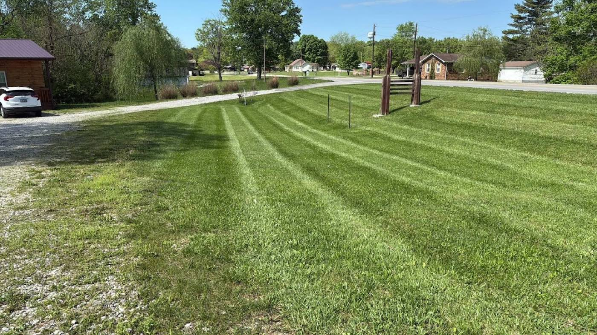
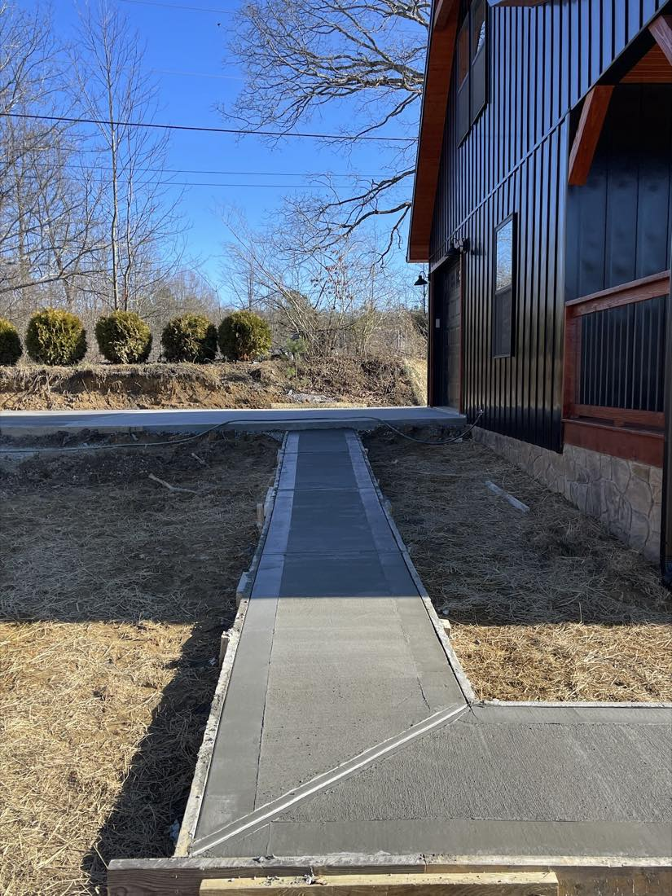
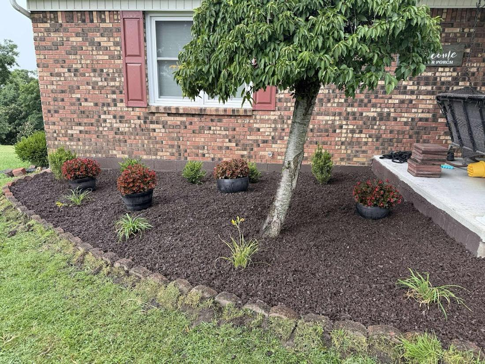
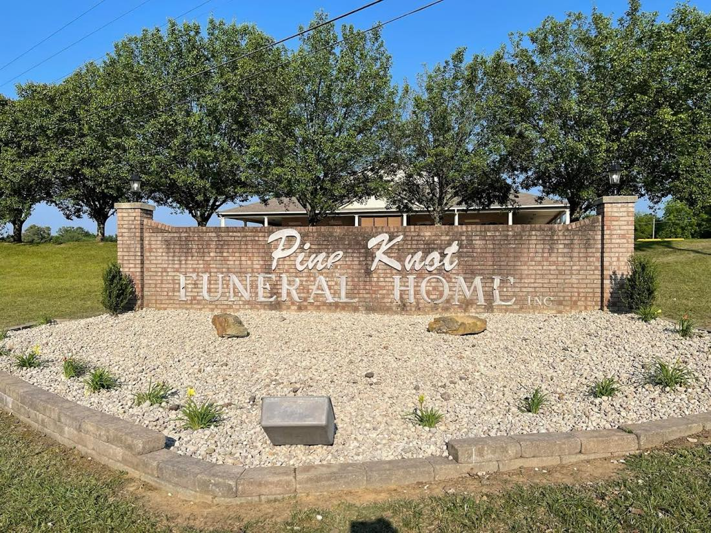
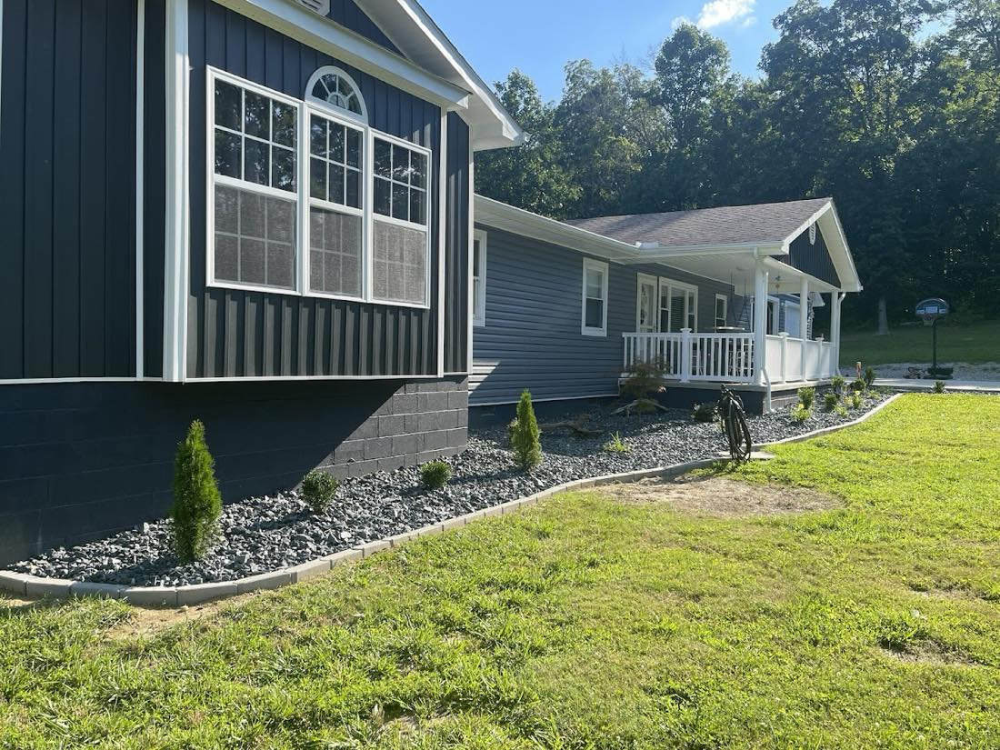
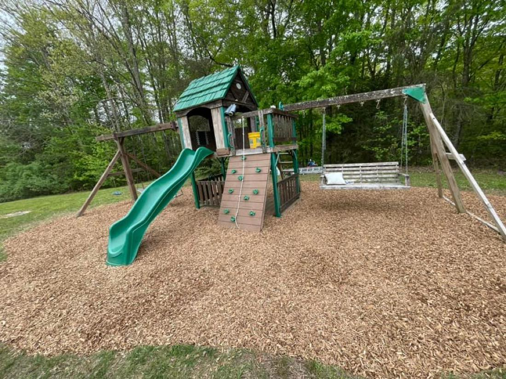
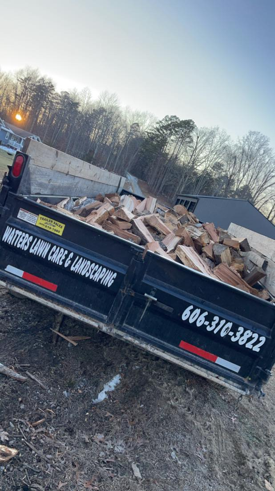

Lawn care & mowing
Regular mowing, trimming and a clean, striped finish to keep your yard looking its best.
Honest work, done by your neighbors.
We're a McCreary County lawn & landscaping crew handling everything from weekly mowing to fresh mulch beds and new walkways — right here around Stearns, KY.
4.6 · 11 reviews on Google

Stearns, KY
Serving McCreary County
Why neighbors choose us
We're local, we show up, and we treat your yard with the same care we'd give our own. No runaround, no surprises — just fair prices and a tidy finish you'll be proud of. Most of our work comes from folks here in Stearns telling their neighbors about us.
Based at Stearns — close enough to swing by, dependable enough to keep your yard on schedule.
Straightforward quotes and a job done right — the kind of work our customers happily review.
Mowing, mulch, edging, plantings and walkways — handled by the same people, start to finish.
What we do
Regular mowing, trimming and a clean, striped finish to keep your yard looking its best.
Fresh mulch beds, crisp edging and new plantings that frame your home beautifully.
New concrete walkways and stone edging that hold up and tie the whole yard together.
Seasonal cleanups and hauling — we bring the dump truck and clear the mess out for you.
"Bryson and his crew have been great to work with. Very respectable and fantastic job. Fair prices and excellent services. Highly recommended!"
Finished work





Want your yard on this list?
Call or text and we'll come take a look — no pressure.
Get a free quote →
The real local crew
That's our rig — out hauling mulch, firewood and cleanup loads across McCreary County. When you call Watters, you're getting a real crew from right here in Stearns, not a number from out of town.
4.6 · 11 reviews on Google
Find us
500 Robert Neal Rd, Stearns, KY 42647
Let's get your yard looking great.
Mowing, mulch, walkways or a full cleanup — tell us what you need and we'll set you up with a fair quote.